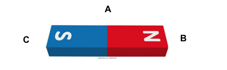
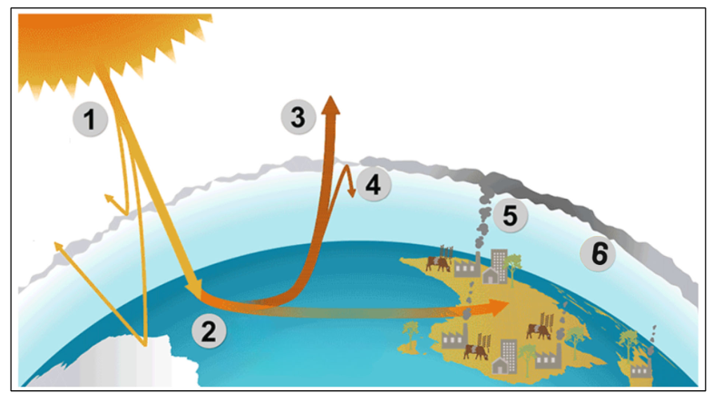
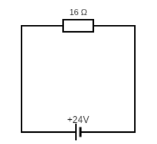
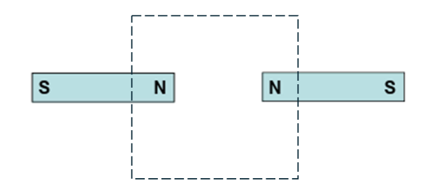
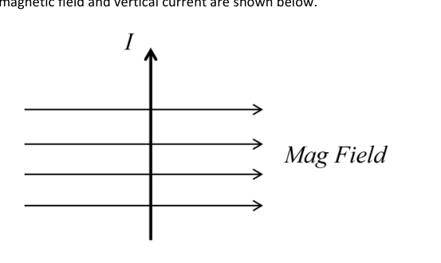
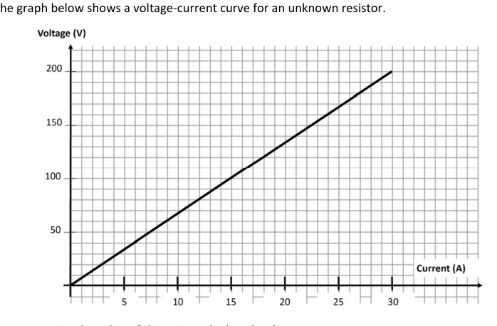

Section A: Multiple choice (11 marks)
What type of radiation is emitted by the Earth's surface after it receives energy from the Sun?
Which best describes the characteristics of a greenhouse gas (GHG)?
Which lists types of radiation in order of increasing wavelength?
Which of the following captures carbon dioxide from the atmosphere?
Which best describes the energy conversion in a hydroelectric power station?
In a photovoltaic (PV) solar energy system, which device changes the output of the solar panel into electricity that common appliances (like a fridge) can use, and what transformation does it carry out?
Which is generally the most mobile electric charge carrier, and what is the sign of its charge?
What happens when a large positively charged sphere is brought near a small, light, neutral polystyrene ball?
The electrons in the ball shift towards the sphere, so the near side becomes slightly negative and the ball is attracted.
A wind turbine generates a current of 89 mA at 2.6 V. What is the best estimate of its power output?
P = VI = 2.6 × 0.089 = 0.231 W = 231 mW.
Which of the following is likely to be a good insulator?

Using the diagram above, where should a student place a compass so that it points left?
A compass points along the field, which goes from N to S. Above the magnet the field runs from the N end (right) back to the S end (left). At B and C the compass would point right.
Section B: Short answer (24 marks)
Question 1 (4 marks)
The diagram illustrates the enhanced greenhouse effect. Stage 1 shows solar radiation reaching the Earth's surface, with some reflected by sea ice.

Referring specifically to sea ice, explain why higher ocean temperatures could lead to a positive feedback loop between ocean temperature and incoming solar radiation.
Higher ocean temperatures melt more sea ice, so less solar radiation is reflected and more is absorbed by the oceans (1 mark). The extra absorption increases ocean temperatures further, which melts even more sea ice: a positive feedback loop (1 mark).
Explain the process involving greenhouse gases that causes the Earth's equilibrium temperature to increase in stage 4.
Greenhouse gases absorb some of the infrared radiation emitted by the Earth's surface (1 mark). This energy is then re-emitted in all directions, some back towards the Earth, further warming the surface (1 mark).
Explain why wind turbines can be considered a renewable energy source.
Wind is a natural resource that is constantly replenished (it is driven by the Sun heating the Earth unevenly) (1 mark), so using it to generate electricity doesn't use it up or deplete it (1 mark).
Question 3 (2 marks)

In which direction do electrons flow through the resistor? Explain.
Electrons flow out of the battery's negative terminal (the short line), around the circuit to the positive terminal, so through the resistor they move away from the side connected to the negative terminal (from right to left in the original marking key's diagram).
Find the size of the current in the resistor.
I = V / R = 24 ÷ 16 = 1.5 A.
Draw (on paper) a circuit that includes: an open switch; a 12 V DC supply; a 47 Ω resistor; an ammeter measuring the current between the resistor and the switch; and a voltmeter measuring the voltage across the resistor. Describe your circuit, then compare.
- A single loop: the 12 V cell/battery, the open switch, the ammeter and the 47 Ω resistor, all in series, with the ammeter in the wire between the resistor and the switch (1 mark).
- The voltmeter connected in parallel, across the two ends of the resistor (1 mark).
- Correct symbols for the other components: the open switch drawn as a break with a lifted contact, the cell with its long (positive) and short lines (1 mark).

Draw (on paper) at least four magnetic field lines around the bar magnets above. Only the area inside the dashed box is assessed. Describe your drawing, then compare.
The two N poles face each other, so they repel: the field lines from each N pole curve away from each other and never meet in the gap, which has a neutral point in the middle (1 mark for shape). The arrows point away from both N poles (1 mark for direction).
A power station produces 12 MW (12 × 106 W) at a voltage of 15 kV (15 000 V). Find the current produced by the power station.
I = P / V = 12 × 106 ÷ 15 × 103 (1 mark) = 800 A (1 mark).
Question 7 (3 marks)
The symbol shows the direction of the current in a wire. Which describes the direction of the current?
A cross is the tail of an arrow going away from you (into the page); a dot is the tip of an arrow coming towards you.
The magnetic field around this wire forms , going .
Right-hand grip rule: point your thumb into the page and your fingers curl clockwise.

A horizontal magnetic field and a vertical current are shown above. What is the direction of the force on the wire?
Right-hand slap rule: thumb up (current), fingers to the right (field), so the palm faces into the page.
Question 9 (3 marks)

Find the value of the resistor, to 1 decimal place.
R = V / I = 200 ÷ 30 (1 mark) = 6.7 Ω (1 mark).
On the same graph, sketch a line for an ohmic device with a lower resistance. Describe your line.
A straight line through the origin with a smaller gradient (less steep), lying below the original line.